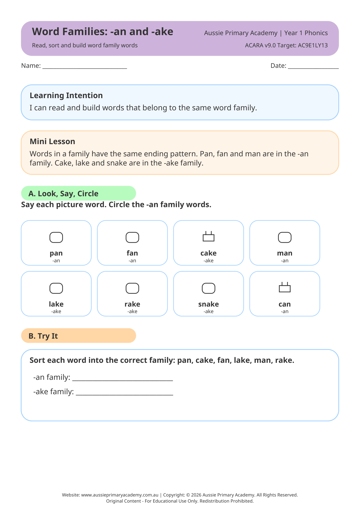

Teacher guidance
Read each word aloud and draw attention to the shared letter pattern and sound. Compare how the beginning sound changes while the word family pattern stays the same.
Year 1 · Phonics · Free Printable
Explore the -an and -ake word families to build reading and spelling skills through familiar letter patterns.
Worksheet Preview

Students recognise and use the -an and -ake word family patterns to read and build new words.
Supports Year 1 English phonic and word knowledge learning. (AC9E1LY13)
Build word family charts together and encourage students to add new words as they think of them.
Practical ways to prepare, support and extend this Year 1 learning.
Read each word aloud and draw attention to the shared letter pattern and sound. Compare how the beginning sound changes while the word family pattern stays the same.
Make a list of words that share an or ake. Read them together and talk about which part stays the same.
Use a word-family chart with a few examples. Extend by generating additional words and reading them in a short sentence.